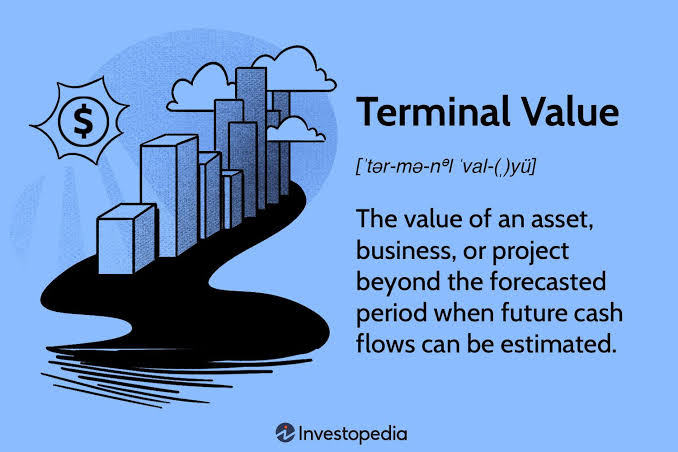

Terminal Value Methods (Perpetuity vs Multiples)
Learn how to estimate the value of a company beyond the explicit forecast period using the two primary Terminal Value methods: the Perpetuity Growth Method and the Exit Multiple Method.

In a Discounted Cash Flow (DCF) model, the explicit forecast period usually covers 5 to 10 years. However, a company is expected to operate indefinitely. The value of all cash flows *beyond* this forecast period is called the Terminal Value (TV).
Terminal Value often accounts for 60% to 80% of a company's total Enterprise Value in a DCF model, making the choice of methodology and its underlying assumptions incredibly critical to the final valuation.
The Perpetuity Growth Method (Gordon Growth Model)
This method assumes that the company will continue to generate Free Cash Flows forever, growing at a constant, stable rate. This rate is typically tied to long-term macroeconomic factors like inflation or global GDP growth.
Where:
• FCF_n = Free Cash Flow in the final forecast year
• g = Perpetual growth rate (typically 2% - 3%)
• WACC = Weighted Average Cost of Capital
The perpetual growth rate (g) is typically very conservative, ranging from 2% to 3%. A company cannot grow faster than the global economy forever, otherwise it would eventually become larger than the entire world economy.
The Exit Multiple Method
This method assumes the company is sold at the end of the forecast period for a multiple of a financial metric, such as EBITDA. It relies on current market valuation benchmarks rather than theoretical infinite growth.
The exit multiple is usually derived from Comparable Company Analysis (Comps), looking at the median or average trading multiples (like EV/EBITDA) of similar companies in the same industry.
Real-World Corporate Finance Example
Suppose Company A has a Year 5 Free Cash Flow of $10 million. The WACC is 10%, and the assumed perpetual growth rate is 2%. Alternatively, the median EV/EBITDA exit multiple for the industry is 8.0x, and Year 5 EBITDA is $15 million.
Perpetuity Growth TV: [$10M × (1 + 0.02)] / (0.10 - 0.02) = $10.2M / 0.08 =
$127.5 million.
Exit Multiple TV: $15M × 8.0x = $120.0 million.
How Analysts Use Terminal Value Every Day
Sensitivity Tables: Because TV is so sensitive to the WACC and growth rate, analysts build data tables showing how the valuation changes across a range of WACCs (e.g., 9% to 11%) and growth rates (e.g., 1.5% to 3.0%).
Sanity Checks: If the Perpetuity Growth Method implies an exit multiple that is wildly out of line with industry peers, the analyst will adjust their assumptions to align with market realities.
Football Field Charts: Investment bankers use both methods to create a valuation range, plotting the results on a "football field" chart to show the client a realistic spectrum of the company's worth.
📝 Practice Quiz & Submodule Check
Complete all questions to unlock Submodule 3.4Answer the multiple-choice questions below. Scoring a perfect score will automatically mark this submodule as completed!